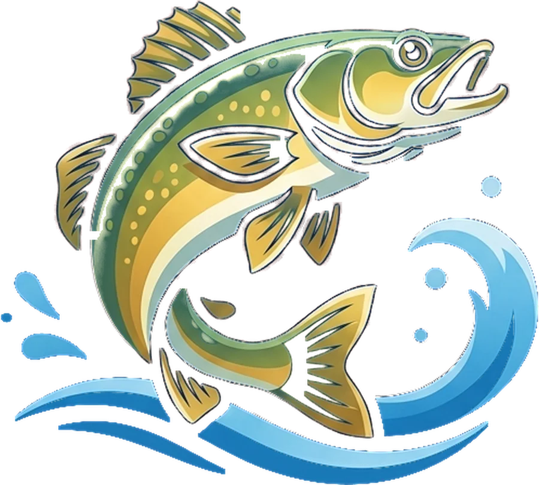
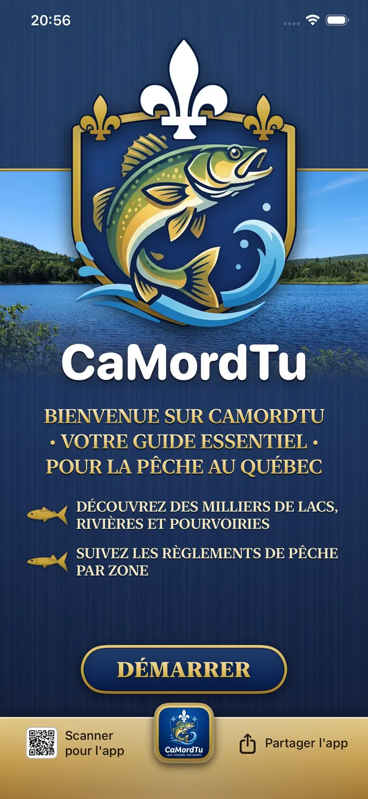
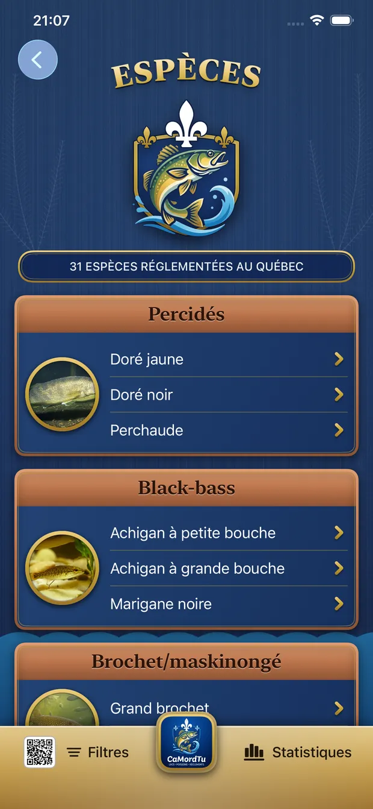
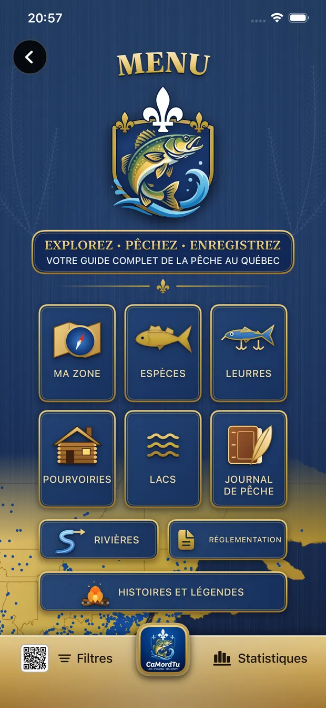
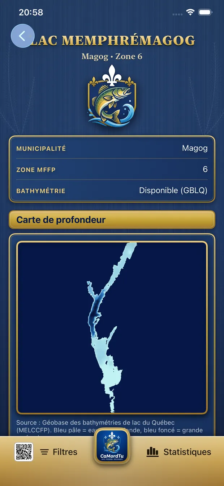
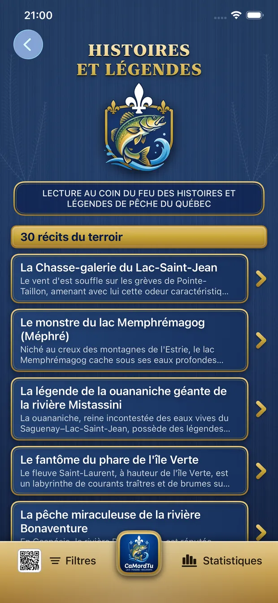
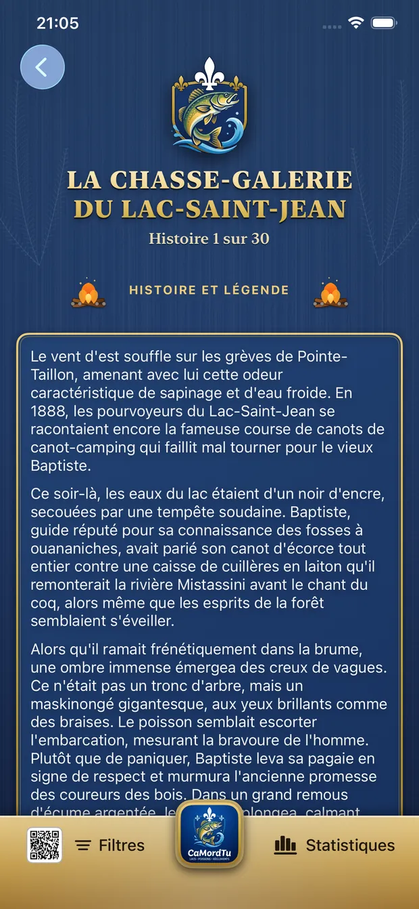

Ma zone
Le GPS détecte instantanément dans quelle zone de pêche du Québec vous vous trouvez — calculé sur votre téléphone, sans réseau.

Votre guide essentiel
pour la pêche au Québec
Ouvrez l'app sur le lac : CaMordTu sait dans quelle zone de pêche vous êtes et vous montre les règlements qui s'appliquent. Lacs, rivières, espèces, leurres, pourvoiries et votre carnet de prises — tout fonctionne sans réseau, même au fond du bois.

Explorez · Pêchez · Enregistrez
Pensée pour être utilisée directement sur le bateau ou au bord du lac, sans connexion Internet.
Le GPS détecte instantanément dans quelle zone de pêche du Québec vous vous trouvez — calculé sur votre téléphone, sans réseau.
Périodes, limites de prise, limites de longueur et engins autorisés pour chaque zone, avec lien direct vers la grille officielle du ministère.
3 224 lacs et les 30 grandes rivières à saumon, ouananiche et truite, avec municipalité, zone et espèces présentes.
Cartes de profondeur des grands plans d'eau — Memphrémagog, Champlain, Mégantic, Saint-Jean et plus — pour repérer fosses et hauts-fonds.
31 espèces réglementées, du doré jaune au maskinongé, avec photos, habitat, taille et techniques de pêche.
Un guide des leurres et un assistant qui vous suggère le bon choix selon l'espèce, la saison et les conditions du jour.
429 pourvoiries offrant la pêche partout au Québec : coordonnées, espèces pêchées, appel en un tap et itinéraire dans Plans.
Consignez vos prises — espèce, lieu, taille, leurre, photos — dans un carnet privé qui ne quitte jamais votre téléphone.
Trente récits de pêche du terroir québécois, à lire au coin du feu entre deux sorties.
Le Carnet du Capitaine
Chaque capture de votre journal devient une page-souvenir élégante — médaillon doré, galerie de photos, sceau de cire et signature — prête à sauvegarder ou à publier sur Instagram et Facebook en un tap.
Et votre carnet reste à vous : aucun compte, aucun serveur. Vos coins de pêche restent secrets.

Aperçu
Marine, or et cuivre : une app aussi belle au chalet que pratique sur l'eau.




6,99 $ CADAchat unique · aucun abonnement · aucun achat intégré
Contact
CaMordTu est développée au Québec par JDG inc. Chaque message est lu et reçoit une réponse personnelle.
Un bug, une suggestion, un lac manquant?
Page d'assistance
Vous gérez une pourvoirie ou une boutique de pêche? Parlons partenariat.
jdgeg@icloud.com
Ce que l'app fait — et ne fait pas — avec vos données.
Lire la politique